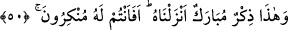

edilir. Kıyâmetin “
” diye isimlendirilmesinin sebebi, kıyâmette hesâbın sür’atle
görülecek olmasındandır. Nitekim Allah Teâlâ: “O, hesap görenlerin en çabuğudur.”
(el-En‘âm, 6/62) buyurur.
“Onlar, tehdit edildikleri azâbı gördükleri gün, sanki gündüzün sâdece bir saati
kadar (dünyada) kalmış gibi olurlar.” (el-Ahkâf 46/35) ve “(Kıyâmet) saat(i)
başladığı gün, suçlular, (dünyada) bir saatten fazla kalmadıklarına yemin ederler.”
(er-Rûm, 30/55) âyetlerinde tenbih olunduğu üzere birinci âyetteki “sâaten” kelimesi
kıyâmet mânâsına, ikincisi ise zamandan az bir vakit mânâsınadır.
Müttakîler mutlak olarak haşyet (candan saygı gösterme) ile vasfedildikten sonra
korktuklarının özel olarak belirtilmesi, kıyâmetin korkulacak şeylerin en büyüğü
olduğunu bildirmek içindir.
50. İşte bu (Kur’an) da, bizim indirdiğimiz hayırlı ve faydalı bir öğüttür. Şimdi onu
inkâr mı ediyorsunuz?
“İşte bu da,” yâni Kur’ân-ı Kerîm de Hz. Muhammed’e “bizim indirdiğimiz hayırlı
ve faydalı”mübârek, hayrı ve faydası çok, kendisiyle teberrük olunan “bir öğüttür.”
Öğüt alma istidâdında olan ondan öğüt alır. Âyette durumunun apaçık olduğunu
bildirmek üzere Kur’ân’a “bu” diye işâret edilmiştir.
“Şimdi onu inkâr mı ediyorsunuz?” Bu cümle, Kur’ân’ın indirilmesinin Tevrat’ın
verilmesi gibi olduğu ortaya çıktıktan sonra onların Kur’ân’ı inkârını, inkâr ve red
mâhiyetindedir. Sanki burada şöyle denilmektedir: “Şimdi siz verilme ve vahyedilme
husûsunda Kur’an’ın durumunun Tevrat’ın durumu gibi olduğunu bildikten sonra, onun
bizim katımızdan indirildiğini inkâr mı ediyorsunuz?” Çünkü Tevrat’ın durumunu
bildikten sonra Kur’an’ın Allah katından indirildiğini inkâr etmeye imkan yoktur.
Büyüklerden birisi şöyle demiştir: “Câhiller onu dinlemese de Allâh’ın kelâmı hadd-i
zâtında mübârektir. Fakat o, kendisini muhabbetle ve kelâmın sâhibine erme şevkıyle
dinleyen, muhtevâsıyla amel eden, işâretini tanıyan ve onun tadını kalbinde bulan
kimseye mübârektir. Böyle olduğu zaman Kur’ân’ın bereketi o kimseyi onun kaynağını
müşâhedeye ulaştırır. Bu da, kadîm olan Allâh’ın zâtını görmektir.
Bir hadiste şöyle buyrulmuştur: “İçinde Kur’an’dan bir şey bulunmayan kimse,
harab olmuş bir ev gibidir.”[182] Başka bir hadiste de şöyle buyrulmuştur: “Evlerinizi
kabirler haline getirmeyin.”[183] Yâni evlerinizi Kur’an tilâvetinden mahrûm
bırakmayın. Çünkü içinde Kur’an okunmayan evler; içlerinde Kur’an okunmaması, zikir
ve taatte bulunulmaması sebebiyle kabirlere benzer.
Bu zamânın halkının ihmâlinden dolayı şikâyetimiz Allâh’a’dır. Çünkü onların
çoğunun meyli Kur’an’a ve hidâyete değil, şiirlere ve hevâ ehlinin sözlerinedir.